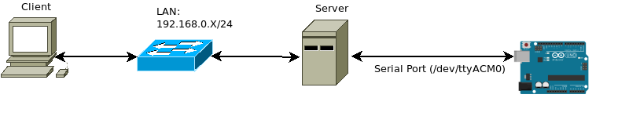

Client API
Commands
Reset state
@Brief: Reset state of PIR & button
@Request:
id |
|---|
“clear_state” |
@Response:
status |
value |
|---|---|
“ok” |
0 |
“error” |
“Error message” |
Example Usage:
import arduino_iface
client = arduino_iface.ArduinoClient("tcp://127.0.0.1:4555")
res = client.send_cmd({"id": "clear_state"})
if res['status'] != 'ok':
print(res['value'])
IR
@Brief: Send an IR command
@Request:
id |
|---|
“ir_set” |
value |
|---|
“intensityup” |
“intensitydown” |
“off” |
“on” |
“red” |
“green” |
“blue” |
“white” |
“rust” |
“palegreen” |
“azure” |
“flash” |
“redorange” |
“turquoise” |
“eggplant” |
“strobe” |
“orange” |
“emerald” |
“purple” |
“fade” |
“yellow” |
“jade” |
“pink” |
“smooth” } |
@Response:
status |
value |
|---|---|
“ok” |
0 |
“error” |
“Error message” |
The values are mapped 1:1 to IR button codes of the remote control used to control an LED strip.
Example Usage:
import arduino_iface
client = arduino_iface.ArduinoClient("tcp://127.0.0.1:4555")
res = client.send_cmd({"id": "ir_set", "value": "on"})
res = client.send_cmd({"id": "ir_set", "value": "green"})
if res['status'] != 'ok':
print(f"Err: {res['value']}")
Note
The IR received is disabled by default since it is used for debugging purpouses only.
To enable it uncomment the // #define ENABLE_IR_RECV line from the sketch.ino file.
PIR Get
@Brief: Retrieve the state of the PIR sensor, the state is cleared on read. Each detected motion is stored as a flag and it maintains its state until read by the user application.
@Request:
id |
|---|
“pir_get” |
@Response:
status |
value |
|---|---|
“ok” |
0 (Motion not detected) / 1 (Motion detected) |
“error” |
“Error message” |
Example Usage:
import arduino_iface
res = client.send_cmd({"id": "pir_get"})
if res['status'] != 'ok':
print(f"Err: {res['value']}")
else:
print(int(res['value']))
Luminosity Get
@Brief: Retrieve the current value meassured by the photo resistor sensor
@Request:
id |
|---|
“luminosity_get” |
@Response:
status |
value |
|---|---|
“ok” |
[ “0” ; “1024” ] (Value of the photo resistor) |
“error” |
“Error message” |
Example Usage:
import arduino_iface
res = client.send_cmd({"id": "luminosity_get"})
if res['status'] != 'ok':
print(f"Err: {res['value']}")
else:
print(int(res['value']))
Topology
The example usages shown above ausme that the server and the client are both running
on the same machine. Which is why the endpoint to which the client connects is 127.0.0.1:
client = arduino_iface.ArduinoClient("tcp://127.0.0.1:4555")
In case of different topology LAN/WAN this endpoint should be changed.
LAN Example
In this scenario if the server is deployed on a machine with IPv4 address: 192.168.0.3
the client should be within the same network and initialized like this
client = arduino_iface.ArduinoClient("tcp://192.168.0.3:4555")